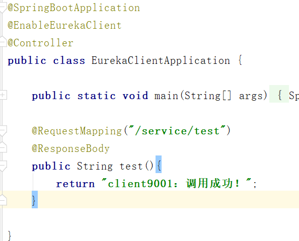

原文出处:本文由博客园博主颜色不一样的烟火提供。
原文连接:https://www.cnblogs.com/zhouyun-yx/p/12009950.html
原文连接:https://www.cnblogs.com/zhouyun-yx/p/12009950.html
- 概述
最近研究了一下springCloud的微服务集群，主要用到了SpringCloud的服务发现和服务器端负载均衡，所有的项目都是用的springboot，
可以和springCloud无缝对接。 - 技术选型
服务发现：eureka
负载均衡：zuul - 实现
Eureka集群（eurekaServer）：8001、8002、8003
服务提供方（eurekaClient）：9001、9002
服务端负载均衡服务：9100
1、新建工程eureka服务器，用idea创建springboot项目，引入eureka依赖
下面是三台服务器的配置文件
在入口处加上EnableEurekaServer注解//第一台 server: port: 8001 spring: application: name: eureka-server eureka: server: use-read-only-response-cache: false #禁用readOnlyMap，分为ReadWriteMap和ReadOnlyMap eviction-interval-timer-in-ms: 3000 #主动失效检测时间 instance: hostname: server8001 client: # register-with-eureka: false #false表示不将自己也作为服务注册到eureka # fetch-registry: false service-url: #集群设置，搭建eureka集群,用逗号分隔 defaultZone: http://localhost:8002/eureka/,http://localhost:8003/eureka/ //第二台 server: port: 8002 spring: application: name: eureka-server eureka: server: use-read-only-response-cache: false eviction-interval-timer-in-ms: 3000 instance: hostname: server8002 client: # register-with-eureka: false #表示不将自己作为服务注册进eureka # fetch-registry: false service-url: #集群设置，搭建eureka集群,用逗号分隔，defaultZone是map类型，所以没有提示 defaultZone: http://localhost:8001/eureka/,http://localhost:8003/eureka/ //第三台 server: port: 8003 spring: application: name: eureka-server eureka: server: use-read-only-response-cache: false eviction-interval-timer-in-ms: 3000 instance: hostname: server8003 client: # register-with-eureka: false #表示不将自己作为服务注册进eureka # fetch-registry: false service-url: #集群设置，搭建eureka集群,用逗号分隔，defaultZone是map类型，所以没有提示 defaultZone: http://localhost:8001/eureka/,http://localhost:8002/eureka/
2、服务提供者
//第一台 server: port: 9001 spring: application: name: eureka-client eureka: client: service-url: # 指定集群服务器列表 defaultZone: http://localhost:8001/eureka/,http://localhost:8002/eureka/,http://localhost:8003/eureka/ instance: instance-id: client9001.com prefer-ip-address: true lease-renewal-interval-in-seconds: 5 #发送心跳包服务刷新时间 lease-expiration-duration-in-seconds: 15 #服务过期时间 //第二台 server: port: 9002 spring: application: name: eureka-client eureka: client: service-url: # 指定集群服务器列表 defaultZone: http://localhost:8001/eureka/ instance: instance-id: client9002.com prefer-ip-address: true lease-renewal-interval-in-seconds: 5 #发送心跳包服务刷新时间 lease-expiration-duration-in-seconds: 15 #服务过期时间添加EnableEurekaClient注解，并添加api业务测试接口

3、zuul负载均衡服务server: port: 9100 spring: application: name: zuul-gateway eureka: client: service-url: defaultZone: http://localhost:8001/eureka,http://localhost:8002/eureka,http://localhost:8003/eureka registry-fetch-interval-seconds: 5 #拉取服务列表时间 instance: instance-id: gateway-9100.com prefer-ip-address: true zuul: prefix: /gateway ignored-services: eureka-client routes: eureka-client.serviceId: eureka-client eureka-client.path: /client/**依次启动Eureka服务器、服务提供者client，zull服务，访问其中一台Eureka服务器的控制台显示如下

问题：
1）、在配置eureka时，defaultZone是个map类型，不提供检测，所以会发现在配置时没有提示，直接写就行；
2）、eurekaServer的hostname起的作用暂不明确，在控制台显示的都是application的name，三台eureka集群和两台服务提供客户端的application.name分别是一样的；
3）、eureka服务器的服务清单分为ReadWriteMap和ReadOnlyMap，其他服务读取时是从ReadOnlyMap读取的，当有服务注册时，写入的是ReadWriteMap，然后会同步到
ReadOnlyMap，这是为了解决读写锁的问题。当一台服务提供应用宕机之后会发现控制台还是有这台服务器的信息，表示没有将服务下线，服务清单列表没有删除这台
服务器的信息，导致zuul在负载均衡时，有时会调用到宕机的那台应用导致返回异常，解决方法是禁用掉eureka服务器的ReadOnlyMap，设置主动失效检测时间，让服务器定时
去检测服务，服务提供者设置服务失效时间和发送心跳包的时间，zuul设置拉取服务清单的时间间隔
4）、zuul路由设置，设置路径前缀和服务的匹配关系 - 测试
不停刷新页面，会在9001和9002之间切换，证明配置成功，关闭9002应用，刷新页面，刚开始还会出现访问失败，过了一段时间后就稳定了，
会有一个时间差，也可以给zuul配置熔断器来进行服务降级或者转发请求到其他正常服务。